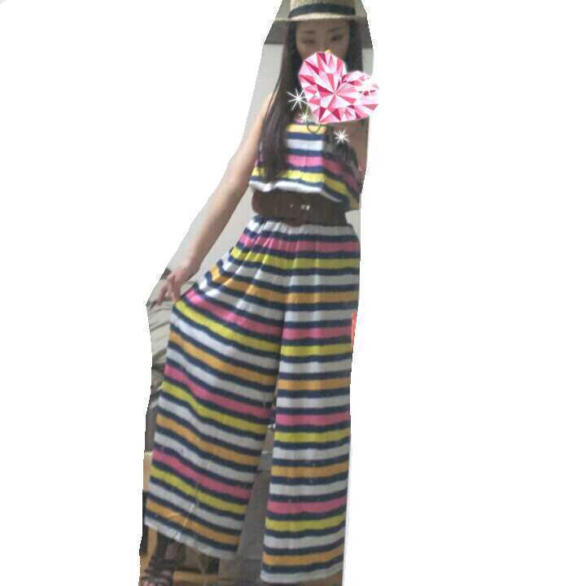
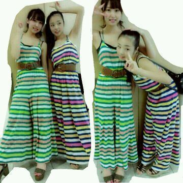

ほっほい,
こんばんわぁ〜☆
ろってぃ−です♪にや。

久しぶりの私服だよ*・ω・*
どぅ?
まひろめちゃくちゃ好き〃ω〃
実はこの服こそが
みさみさからもらった洋服
なのですぅーーー > <
キラ−ン☆
ほら見て見て*・ω・*
みさみさと色ちがい〃^^〃

みさみさ♪ありがと,
すっごい気に入ってるの(*^^*)
みさみさがね,電話で
『今どこにいるぅ?
ろてぃ子に会いたくなったんやけど 行っていい?』
って連絡があって,
みさみさが わざわざ
まひろのいる所まで
きてくれて
何か相談があるのかなぁ・_・`?
って思ってたら
『お誕生おめでと!!・∀
これ渡したかったにっ☆!』
って言われて
プレゼントされたの^ω^
ほんとびっくりよ,
嬉しかったなぁ〜・ω・
みさみさ 大好きよ´∀`
誕生日の日 頭にチューされた 笑
『そんな逃げんでいいや−ん^ω^笑』
って言ってた*^^* )))
あっ,そだそだ♪
あれよ・ω・
3日 金曜日 は 東京タワーで
まひろ らりん まあやで
公開収録あっから
よかったらきてほしいんだからー*´∀`*
ぴくぴく )))
のし★☆★